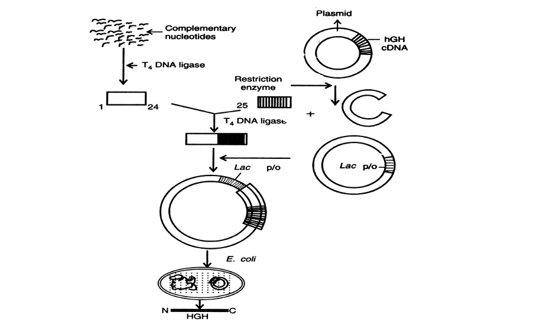

Abstract
Biotechnology is the application of genetic engineering techniques to change microbes, plants, and animals to create commercial products and processes that benefit humans (Martínez 173). The use of recombinant-DNA techniques and transgenic animals has allowed the synthesis of infinite amounts of purified growth hormones and the generation of growth hormone analogs. Human Growth Hormone, produced by the pituitary gland, spurs growth in children and adolescents; its functions include regulating and maintaining body composition and fluids, muscle and bone growth, sugar and fat metabolism and repairing healthy tissue in the brain and other organs. Since recombinant DNA technology can be used to synthesize human growth hormone (HGH), HGH can be cloned from a cDNA library and introduced into E. coli cells by cloning them into a bacterial vector. With its ever-growing advancements, development of HGH biotechnology is being used to treat many metabolic disorders, enabling large-scale commercial production.
History of Synthetic Human Growth Hormone
The first news of synthetic HGH produced was in 1971 by Berkeley chemists. Growth hormone synthesis cleared the way for recombinant hormone manufacture and dramatically boosted supplies after FDA approval in 1985. However, synthesizing growth hormone (GH) started in 1956. The growth hormone was first extracted from the pituitary gland by Choh-Hao Li and David H. Papkoff in California and Maurice Raben in Massachusetts. However, the biochemical structure of the growth hormone was not fully until 1972 (Ayyar, 2011). In 1958, Raben reported the results of the first trial that show the effects of human GH on growth, and by 1960, an enthralling conclusion was made. It was clear that Growth Hormone-deficient children would benefit from pituitary-GH. Between 1963 and 1985, the National Pituitary Agency supervised most of the GH treatment in the United States. Approximately 7700 children in the U.S and 27,000 children worldwide were given GH extracted from human pituitary glands to treat severe GH deficiency (Ayyar 2011). This crucial era of synthesizing GH in pediatric endocrinology finished after the distribution of pituitary GH was suspended after discovering that some of the drugs were contaminated by a cadaver infected with Creutzfeldt-Jakob disease. This trial was essential to the development of recombinant DNA HGH. With earlier works and identification of the biochemical structure of GH, it became the catalyst for the development of recombinant DNA-derived human GH. In 1981, Genentech, a biotechnology company, pioneered the first use of recombinant HGH for human therapy.
Recombinant HGH Production
Recombinant DNA technology has contributed to health care in two important ways: the production of pharmaceutically significant proteins and gene therapy to replace defective genes (Nambisan, 2017). Advancement in recombinant DNA technology has made possible the expression of proteins in host cells, such as E.Coli to create recombinant HGH. HGH is generally produced by inserting the HGH gene into plasmids of E.Coli bacteria. First, the gene for HGH must be isolated from the pituitary gland. Recombinant bacterial cells are collected from the extracellular media after being grown (Uppangala, 2010). The recombinant E. coli are separated from the culture and mass production by fermentation technology to obtain HGH (Karki, 2017). However, there are limitations in the production of recombinant HGH. In HGH production in the body, it is attached to a single peptide with 26 amino acids that is split before releasing the HGH to do its biological functions, but in the production of recombinant HGH, the signal peptide interrupts the production. First, cDNA is produced by mRNA encoding for HGH. cDNA is then integrated into the plasmid and inserted into E.Coli bacteria. HGH is extracted along with the signal peptide chain.
Fig. 1. shown here is the process of HGH by recombinant DNA technology
Applications of HGH in Society
HGH has been approved for the treatment of people with endogenous HGH deficiency or short stature secondary to chronic renal failure (Phillips, 2009). HGH is used to treat children with metabolic disorders and adults with a growth hormone deficiency and can also be used to support people undergoing chemotherapy.
Conclusion
Human Growth Hormone is a naturally occurring hormone produced by the pituitary gland that is important for growth, cell regeneration, and cell reproduction. The use of recombinant HGH is already used for the treatment of children suffering from growth deficiency, Turner's syndrome, chronic renal insufficiency, and patients with renal carcinoma. As technology advances in modern society, the implications of HGH can be used for other illnesses through advancements made in the field.
References
- Ayyar, VageeshS. “History of Growth Hormone Therapy.” Indian Journal of Endocrinology and Metabolism, vol. 15, no. 7, 2011, p. 162. Crossref, https://doi.org/10.4103/2230-8210.84852.
- FLODH, HANS. “Human Growth Hormone Produced with Recombinant DNA Technology: Development and Production.” Acta Paediatrica, vol. 75, no. s325, 1986, pp. 1–9. Crossref, https://doi.org/10.1111/j.1651-2227.1986.tb10356.x.
- Karki, Gaurab. “Production of Human Growth Hormone (hGH) by Recombinant DNA Technology.” Online Biology Notes, 18 Dec. 2018, onlinebiologynotes.com/production-human-growth-hormone-hgh-recombinant-dna-technology.
- National Museum of American History. “The Big Story behind Synthetic Human Growth Hormone.” National Museum of American History, 18 Oct. 2012, americanhistory.si.edu/blog/2012/10/human-growth-hormone.html.
- Uppangala, Nidhi. “Production of Recombinant Human Growth Hormone Somatotropin.” Biotech Articles, Nidhi Uppangala, 27 Aug. 2010, www.biotecharticles.com/Biotechnology-products-Article/Production-of-Recombinant-Human-Growth-Hormone-Somatotropin-367.html.